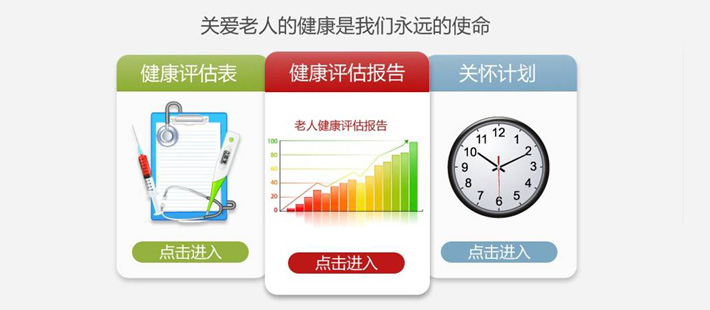

家庭护理服务
您还在为谁来照顾爸爸妈妈困扰？您的日常起居真的需要24小时的照顾？您还在为换来换去的保姆发愁？家中的保姆能照顾好大病初愈的爸爸妈妈？
情况评估
通过健康评估系统评估，结合居家服务和慢性病的特点制定居家服务计划，从而使病人减少住院天数，提高经济效益。
护理服务计划
通过系统制定标准化的护理服务计划，提高医效护理的连续性，包括生活照料、基础护理、康复护理、心理护理等方面。
生活照护服务
通过系统提供标准化饮食照料、排泄照料、睡眠照料、清洁照料等服务。
基础护理服务
通过定制的健康档案提供可监控的用药照料、消毒防护、生命体征检测、应急救护
康复护理服务
康乐服务、功能锻炼服务
心理护理服务
系统化提供心理保健、心理疏导、情绪关爱